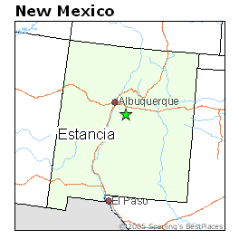

Mr. Morrow Hall |
 |
I
guess it was in 1977 that I got a call from Larry Hamm, who was the
director of
the New Mexico Film Commission. I was mayor of Estancia, New Mexico, at
the
time. Larry said a movie company wanted to film in town and asked if he
and
some of the movie people could visit with me the next day. I eagerly
agreed.
Larry arrived at my office at
about 11 AM
with Sam Peckinpah, the director, and three or four other men. One was
the
location manager, but I don’t recall other names or titles.
They briefly
explained what the movie was about and what part Estancia would play in
it. Sam
then asked if there was a bar anywhere near.
“Right across the
street,” I said. He then
directed the others to go look for appropriate locations and invited me
to join
him at the bar. We went over to the Blue Ribbon Bar, where we stayed
for
several hours. Sam was buying, and I think we were drinking tequila.
I enjoyed talking with him
about some of
his films, including Straw Dogs, which I thought was well done, and Pat
Garrett
and Billy the Kid, which I liked because Bob Dylan was in it. By the
time the
others came in with glowing reports of excellent locations, we were
pretty good
friends.
I announced the planned
filming in the
local paper, and the town was pretty excited. In the following weeks,
various
fake buildings were constructed that would be crashed into by
semi-trucks when
filming began. All kinds of local merchants and laborers got a piece of
the
action and were paid a lot more than their usual fees. It was a lot of
fun.
The project was leaking money
like a rusty
bucket. One of the guys working on construction said he
didn’t bring any tools
with him. Everything was purchased new, he said, and if he was lucky
he’d be
taking a lot of tools back with him when they left. When it came to
cost-overruns or expensive midstream changes of plan, this crew could
have
taught Boeing and Halliburton some tricks.
The excitement level in the
town was
maintained as the actors came to town in their fancy motor-homes. Kris
Kristofferson stayed in his most of the time, and it was rumored that
he was
busy doing lines of cocaine. This was back when that was quite a fad,
and Sam
himself wore a leather strap with a gold-plated razor blade on it as a
necklace. That should explain a lot.
Ali McGraw was charming, but
nobody was as
ebullient and friendly as Ernest Borgnine. He was everywhere, talking
to
everybody, enjoying life. I really enjoyed him and his wife, Tova.
James Coburn arrived at some
point and was
listed as an assistant director or something. He held court every night
at the
Olde Co-op, a local restaurant and lounge, wearing his flat hat and
smoking
those skinny stogies, usually surrounded by women. He was also very
friendly,
but I only saw him “work” once. When the climactic
scene of the semis smashing
into the jail was all set up, ready to film, he strode in, looked
around, and
went back out.
“I like
it,” he announced, and went back to
the Co-op.
Some
filming was done here, but then the
crew went off to Raphael’s Silver Cloud bar near Bernalillo
and some other New
Mexico locations, and as time went on, the bloom was off the rose as
far as our
local citizens were concerned. “They keep blocking the
street.” “They built
fake buildings where I used to take a shortcut to the post
office.” “Will they
ever finish this movie stuff?”
It was at about this time
that the decision
was made to take the crew to California to film the bridge scene at the
end of
the movie. The crew left, but the buildings and the growing irritation
remained. They were gone quite a while.
By the time they returned,
that irritation
had grown and apparently Sam was getting the brunt of it. I had asked
him that
first day if he would mention Estancia in the credits, and he said he
would,
but he was getting annoyed by the local annoyance, and he
wasn’t as friendly
with me. When the film came out, the thank-you was only to
“the people of New
Mexico.”
I got to know quite a few of
the people
working on the film, and somebody gave me a script. I took it around
and got a
lot of the people to sign it – not just the actors but
everybody involved. But
Sam’s signature is noticeably absent. I recently donated the
script to the
Estancia Public Library.
At some point, the increasing costs caused a big shot from BMI in England to come to Estancia to pull in the reins. I enjoyed meeting him, and he wrote in the script, too. And then it was over. All the debris was cleaned up, the crew left, and I wasn’t re-elected as mayor. Despite that, I look back fondly at the experience